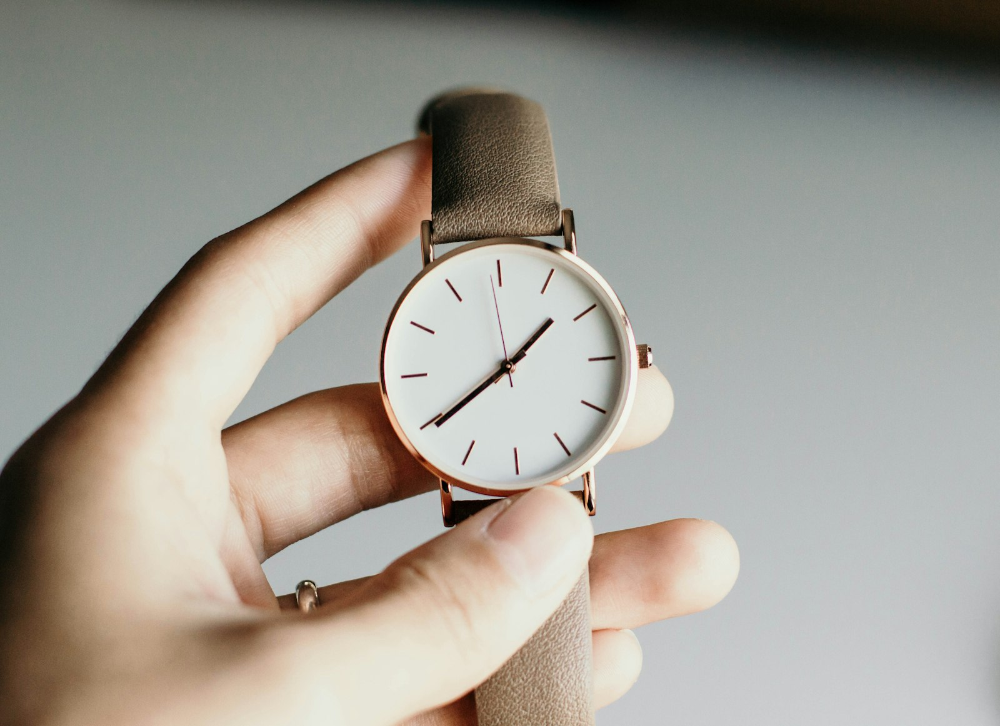
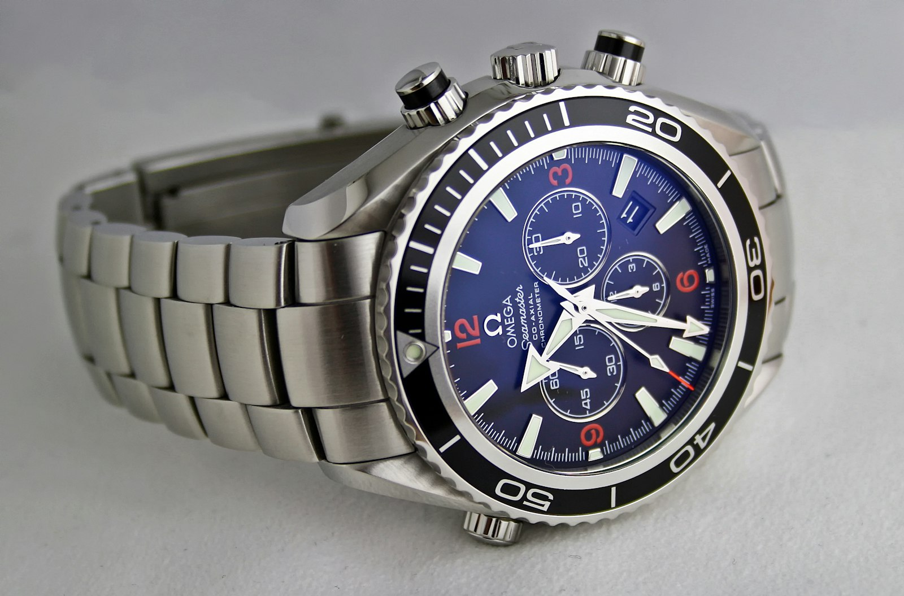
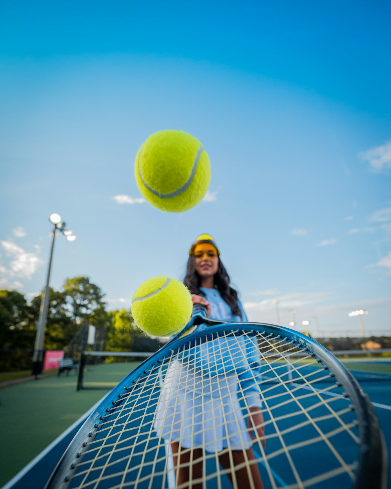
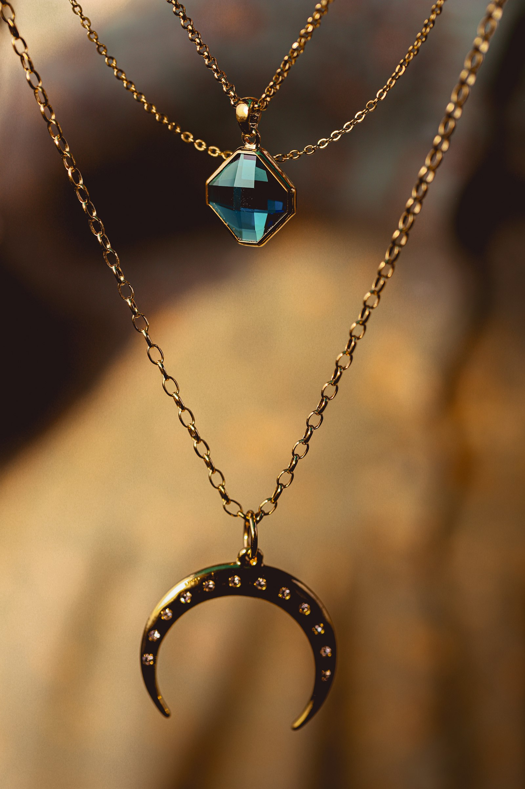
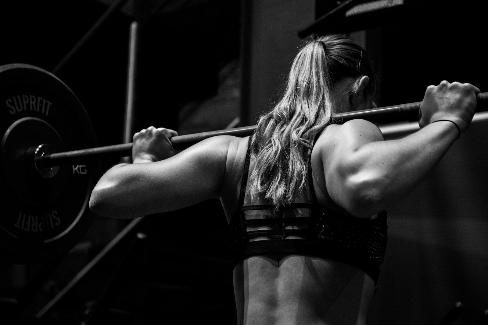
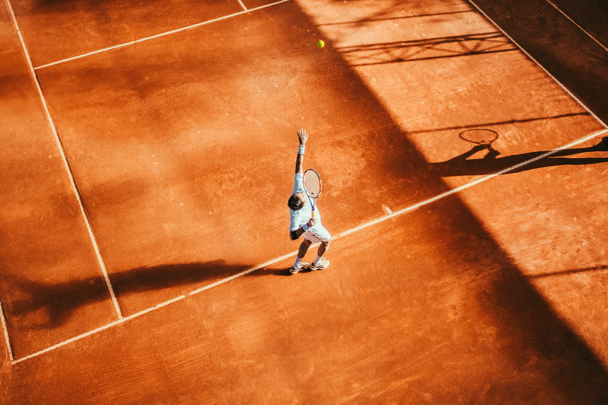

Gear
装备
球拍、球鞋、球衣与配件——按场景挑，按型号买。

球员版图 · 明星系列
郑钦文的装备与时尚版图
14 个代言、Nike 与 Wilson 的中国门面——从球场战袍到红毯高定，每件同款附购买渠道。
阅读全文 →
球员版图
费德勒的优雅版图
Uniqlo 十年、On 联合创始人、Rolex 常青：退役之后，商业版图反而更清晰。

球员版图
阿尔卡拉斯的装备与时尚版图
Nike、Babolat Pure Aero 98、LV 大使——年轻之王的同款地图。

球员版图
辛纳的装备与时尚版图
HEAD、Gucci 与 Nike 长约：意式冷静背后的商业路径。

球员版图
萨巴伦卡的珠宝与力量美学
127 克拉的美网战役：Material Good 定制与 Audemars Piguet 的合作逻辑。

球员版图
米拉·安德烈娃的高定进化
19 岁首满贯、Rolex 官宣、Chanel 造型——00 后天才的装备与高定路径。

球员版图
亚历克斯·伊埃拉的装备与时尚版图
菲律宾网球新史：Nike 全球品牌大使，Babolat 与本土品牌矩阵。

球员版图
大阪直美的时尚版图
Nike、Yonex、Citizen、Mikimoto——从球场到高定的同款购物地图。

单品清单
郑钦文的装备清单
球拍、球鞋、恢复设备到比赛球，逐件拆到型号与价格。

赛事同款
街头战神：大阪直美 2026 美网战袍
订制礼服、76 人脏辫与三套穿搭公式，附同款装备清单。

EN
Street Warrior: Naomi Osaka's 2026 US Open Look
The English edition of the US Open look breakdown.
选购指南
女款网球裙选购指南
8 款真实在售，从迪卡侬到 Lululemon，按预算分三档。

赛季盘点
2026 四大满贯最值得入手的网球裙
澳网、法网、温网、美网四站主题款，含本季看点与购买渠道。

选购指南
网球拍选购指南：从新手到进阶
8 支拍、五大参数：拍重、拍面、线床、平衡与磅数怎么对应打法。

礼品指南
网球高净值好物：联名、限量与珠宝
从 David Yurman 到 On × Federer，按预算挑一件有故事的礼物。

选购指南
网球发球机选购指南
Lobster、Spinshot 与斯波阿斯 7 款：从家用入门到教练旗舰。